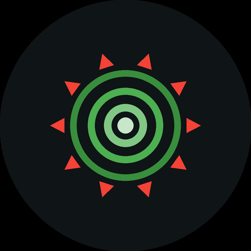
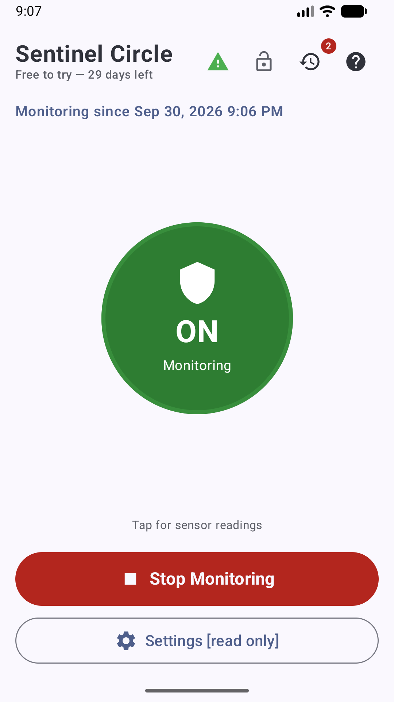
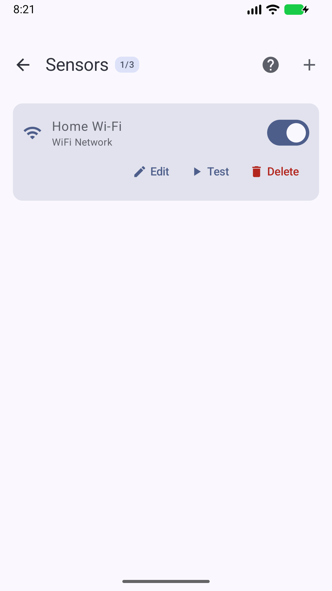
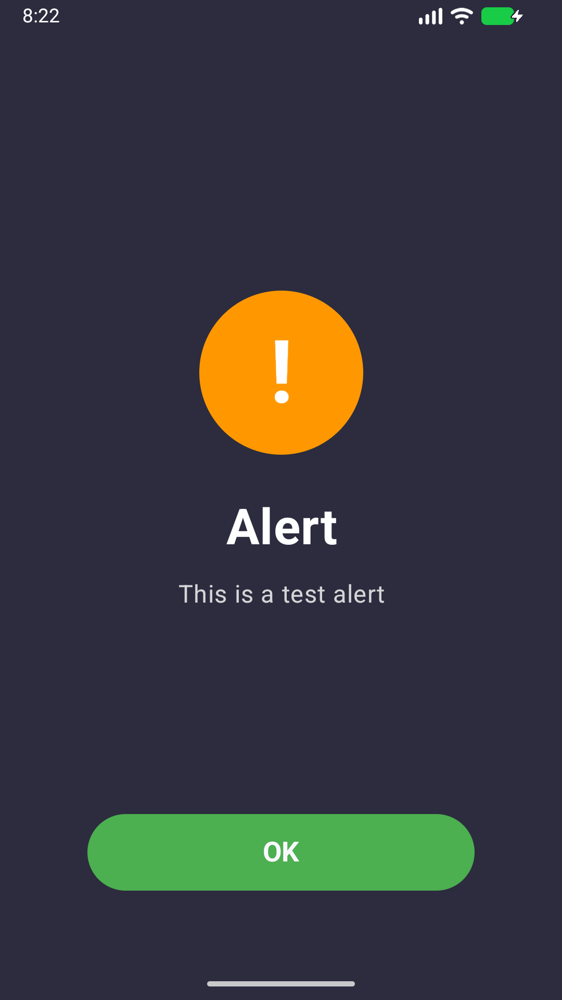

Know they are safe.
Alerts caregivers by SMS, phone call, email and WhatsApp when a person with dementia or Alzheimer's leaves home — using WiFi and Bluetooth already on your phone. No GPS, no wearable, no monthly fees.
Free 30-day trial · one-time purchase, no subscription · Android 6.0+
WiFi, Bluetooth, email, notifications, or an unrecognized-device watch — pick what fits the home.
SMS, phone call, email, WhatsApp, on-device alarm, sound and vibration — all at once, retried automatically if one fails.
Everything stays on the device. No accounts, no ads, no analytics. Nothing is sent anywhere except the alerts you configure.
App lock so the monitored person can't stop it, adjustable debounce timing, and a screen saver for kiosk-style phones.
One possible setup: a phone left at home watches a Bluetooth tag the person carries and emails you when they leave — it needs no mobile plan (no SIM or eSIM), just the home WiFi. A second phone, in your pocket, watches for that email and sounds an alarm.
Live status, configurable sensors, and a full-screen alert that's hard to miss.


